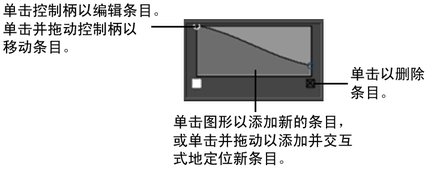
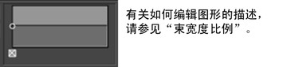

这些是 hairSystemShape 节点（也是 hairSystem 节点）中的属性描述。修改这些属性时，它们会影响整个头发系统。
模拟方法(Simulation Method)
模拟方法(Simulation Method)
控制在头发系统中模拟什么。从下拉列表中选择一个选项。
- 禁用(Off)
-
在播放模拟期间不会显示或更新头发系统。
- 静态(Static)
-
在播放模拟期间不会移动头发系统。但是如果变换了曲面，头发系统会更新头发的位置。
- 仅动力学毛囊(Dynamic Follicles Only)
-
在播放模拟期间头发系统只模拟并更新动力学头发。将隐藏被动头发。
- 所有毛囊(All Follicles)
-
在播放模拟期间头发系统模拟并更新所有头发（动力学和被动）。
- 显示质量(Display Quality)
-
该值是要为交互式绘制显示的束内头发百分比。此显示质量与 Paint Effects 笔划的显示质量相对应。默认值为 100。
- 使用 Nucleus 解算器(Use Nucleus Solver)
-
启用该选项时，头发系统的行为类似于 Nucleus 对象，且由 Nucleus 解算器进行解算。作为 Nucleus 对象，头发对象可以与其他 Nucleus 对象交互以及自碰撞。禁用该选项时，头发系统使用 Maya 经典头发解算器进行解算，且其行为不类似于 Nucleus 对象。
当使用 Nucleus 解算器(Use Nucleus Solver)处于禁用状态时，与 Nucleus 相关的属性在 hairSystemShape 节点属性编辑器(Attribute Editor)上不可用。
束和头发形状(Clump and Hair Shape)
该区域包含用来控制发束和总体头发形状的属性。
- 每束头发数(Hairs Per Clump)
-
这是为每个毛囊渲染的头发数量。
- 光秃度贴图(Baldness Map)
-
使用纹理降低头发密度。使用的纹理必须是 2D 纹理。

- 截面分段(Sub Segments)
-
这将确定渲染时平滑插值分段的数量。除了提供更详细的卷曲和精细功能以外，Hermite 插值还平滑线的形状。添加的分段只会影响渲染的外观，并不影响动力学模拟。
- 稀释(Thinning)
-
这会控制较短长度头发的比例。
- 束扭曲(Clump Twist)
-
这是围绕主头发轴的束组的旋转。
- 弯曲跟随(Bend Follow)
-
这会确定总体束的旋转跟随主头发轴的程度。该值接近零，短直发可能效果更好，因为宽束在扭曲时其末端会更好的融合。该值为 1.0 时，发束的横截面将始终垂直于管方向，这对相对较长的薄束更适用。该值为零时，横截面始终垂直于发束开始处的曲面法线。
- 束宽度(Clump Width)
-
这是动力学头发组的基本或最大宽度。
- 头发宽度(Hair Width)
-
这是毛发的全局宽度。
- 束宽度比例(Clump Width Scale)
-
使用渐变（图形）可以为发束定义不同的宽度。“束宽度比例”(Clump Width Scale)影响从发束根到发束尖端的宽度。图形左侧是根而右侧是尖端。您可能希望束内的头发在束的末端产生尖端，在这种情况下，右侧的值应小于左侧。该属性乘以“束宽度”(Clump Width)参数的值，因此值为 1.0 时将保持“束宽度”(Clump Width)不变。如果“束宽度”(Clump Width)属性为零，该参数将不会产生任何效果。
 - 头发宽度比例(Hair Width Scale)
-
使用渐变（图形）可以为总体头发形状定义不同的宽度。“头发宽度比例”(Hair Width Scale)会影响从头发根到头发尖端的宽度。图形左侧是根而右侧是尖端。该属性乘以“头发宽度”(Hair Width)参数的值，因此值为 1.0 时将保持“头发宽度”(Hair Width)不变，但如果“头发宽度”(Hair Width)属性为零，该参数将不会产生任何效果。
- 束卷曲(Clump Curl)
-
使用渐变（图形）可以为发束定义不同的卷曲。“束卷曲”(Clump Curl)控制有关每个发束围绕主轴卷曲的速率。图形左侧是根而右侧是尖端。渐变的中间值 (0.5) 表示没有扭曲，而值大于 0.5 将导致正扭曲，值小于 0.5 将导致反向的扭曲。
 - 束平坦度(Clump Flatness)
-
使用渐变（图形）可以为发束定义不同的平坦度。“束平坦度”(Clump Flatness)会从根到尖端影响束组的平坦度。图形左侧是根而右侧是尖端。

- 束插值(Clump Interpolation)
-
该值指定当前头发系统发束之间的插值量。对于每个发束，“束插值”(Clump Interpolation)会计算其三个最近的相邻并执行以下操作：
- 在发束中展开头发的末端，并向其他发束移动头发的尖端。
- 使发束中的头发角度指向其他发束，远离其面法线。
“束插值”(Clump Interpolation)越高，在发束中会出现越分散的头发。在希望用不太明显的束创建平滑连续的头发头时，该设置很有用。
该属性总体影响当前头发系统的所有发束。与使用较低的“束宽度”(Clump Width)相比，使用较高的“束宽度”(Clump Width)时该属性的效果更明显。“束插值”(Clump Interpolation)默认为 0.0。
这会导致意外的头发碰撞，因为碰撞仅发生在原始发束边界内，而不在束插值区域中。
- 插值范围(Interpolation Range)
-
该值确定束可以相距多远并仍彼此进行插值。“插值范围”(Interpolation Range)乘以当前头发系统的“束宽度”(Clump Width)来定义发束要包含在束插值中彼此之间的最大距离。
例如，“插值范围”(Interpolation Range)为 8 指定头发解决方案将在 8 乘以“束宽度”(Clump Width)值的距离内寻找束。位于该范围之外的所有发束不会包含在束插值中。
在希望改变发束的宽度以使毛囊看起来更为自然时，该设置很有用。“插值范围”(Interpolation Range)默认为 8.0。
碰撞(Collisions)
- 碰撞(Collide)
-
启用该选项时，nHair 对象与 Nucleus 对象（包括共享同一 Maya Nucleus 解算器的其他 nHair 对象）碰撞。禁用该选项时，nHair 对象不与其他 Nucleus 对象碰撞。
- 自碰撞(Self Collide)
-
启用该选项时，由头发对象生成的动力学头发将互相碰撞。禁用该选项时，它们不会发生碰撞。
碰撞标志(Collision Flag)
指定 nHair 对象的哪些组件将参与碰撞。
- 顶点
-
nHair 对象的顶点发生碰撞。碰撞在围绕 nHair 顶点的碰撞球体上发生。
- 边(Edge)
-
nHair 对象的边发生碰撞。碰撞在围绕 nHair 边的碰撞圆柱体上发生。
自碰撞标志(Self Collision Flag)
指定 nHair 对象的哪些组件参与自碰撞。
- 顶点
-
nHair 对象的顶点发生碰撞。碰撞在围绕 nHair 顶点的碰撞球体上发生。
- 边(Edge)
-
nHair 对象的边发生碰撞。碰撞在围绕 nHair 边的碰撞圆柱体上发生。
- 碰撞强度(Collide Strength)
-
指定 nHair 对象与其他 Nucleus 对象之间的碰撞的强度。在使用默认值 1 时，对象与自身或其他 Nucleus 对象发生完全碰撞。0 至 1 之间的“碰撞强度”(Collide Strength)值将衰减完全碰撞；而 0 则会禁用对象的碰撞（这与禁用对象“碰撞”(Collide）属性的作用相同)。
如果头发在碰撞期间变为已捕获，则降低碰撞强度(Collide Strength)可能会使模拟更稳定并产生更好的效果。
- 碰撞层(Collision Layer)
-
将当前 nHair 对象指定给特定的碰撞层。“碰撞层”(Collision Layers)确定共享同一 Maya Nucleus 解算器的 Nucleus 对象如何交互。
同一碰撞层上的 Nucleus 对象以正常方式碰撞。但是，当 Nucleus 对象位于不同的层时，较低值层上的对象比较高值层上的对象具有更高的优先级。因此碰撞层 0.0 上的 Nucleus 对象将推动碰撞层 1.0 上的对象，后者又会推动碰撞层 2.0 上的对象。该碰撞优先级会发生在由 nucleus 节点上的“碰撞层范围”(Collision Layer Range)属性设置的范围内。
如果两个对象的碰撞层差值为 1.0 或更大，则相对于较高层来说，较低层实质上是刚性。如果碰撞层差值小于 1，则相对推动（或质量）将更相等。
注：碰撞层中的其他 Nucleus 对象只与位于同一碰撞层或更高层中的 nHair 对象发生碰撞。
另请参见 nClothShape 节点的碰撞层属性。
- 最大自碰撞迭代次数(Max Self Collide Iterations)
-
针对当前头发对象的自碰撞，指定每模拟步最大迭代次数（在动力学曲线之间）。“最大自碰撞迭代次数”(Max Self Collide Iterations)钳制迭代的次数，以防止高级别属性值或大量模拟步锁定 nHair 对象。
- 碰撞宽度偏移(Collide Width Offset)
-
指定在解析碰撞之前添加到束宽度(Clump Width)的值。该值相对于束宽度(Clump Width)。
当被动头发在主动束边界之外移动时，使用碰撞宽度偏移(Collide Width Offset)可帮助解决穿透和校正头发行为。如果头发碰撞远离对象，则使用负值以允许束的一些穿透。
- 自碰撞宽度比例(Self Collide Width Scale)
-
允许为自碰撞缩放头发和发束的厚度。当设置为 2.0 时，头发的自碰撞宽度将是头发与其他 Nucleus 对象碰撞的宽度的二倍。
解算器显示(Solver Display)
指定在场景视图中为当前 nHAir 系统显示哪些 Maya Nucleus 解算器信息。“解算器显示”(Solver Display)可以帮助更好地诊断和解决使用头发模拟时可能遇到的所有问题。
- 禁用(Off)
-
场景视图中不显示任何 Maya Nucleus 解算器信息。
- 碰撞厚度(Collision Thickness)
-
启用该选项时，场景视图中将显示当前 nHair 系统的碰撞体积。碰撞厚度(Collision Thickness)有助于可视化单个发束的厚度，且当调整头发与其他 Nucleus 对象的碰撞时它很有用。当前 nHair 的碰撞体积的外观是由其“碰撞标志”(Collision Flag)确定的。请参见碰撞标志。

- 自碰撞厚度(Self Collision Thickness)
-
启用该选项时，场景视图中将显示当前 nHair 系统的自碰撞体积。自碰撞厚度(Self Collision Thickness)有助于可视化发束的自碰撞厚度，且当调整 nHair 自碰撞时它很有用。
- 反弹(Bounce)
-
指定每个动力学头发的自碰撞弹性或反弹度。
- 摩擦力(Friction)
-
指定 nHair 对象的摩擦力大小。摩擦力(Friction)确定头发在进行自碰撞以及与共享同一 Maya Nucleus 解算器的其他 nCloth 对象发生碰撞时抵制相对运动的程度。
摩擦力(Friction)的效果受头发对象的粘滞(Stickiness)值影响。
- 粘滞(Stickiness)
-
粘滞(Stickiness)指定在发生碰撞期间头发彼此粘滞或与其他 Nucleus 对象粘滞的趋势。
有关粘滞(Stickiness)和摩擦力(Friction)的其他信息，请参见 nClothShape 节点的摩擦力(Friction)和粘滞(Stickiness)属性。
- 静电吸附(Static Cling)
-
当自碰撞(Self Collide)处于启用状态时，静电吸附(Static Cling)指定自碰撞头发之间局部吸引力的大小。这将模拟静电吸附效果并在头发上创建其他摩擦力。
使用静电吸附(Static Cling)可衰减一堆头发的运动，且对于实现大量头发的自然运动会很有用。负的静电吸附(Static Cling)值会导致头发相互排斥。
动力学特性(Dynamic Properties)
- 无拉伸(No Stretch)
-
启用时，输出头发曲线的长度固定在开始头发曲线的长度。“无拉伸”(No Stretch)保持输出头发曲线长度恒定，并防止它们拉伸。这使您可以创建逼真、柔韧且无拉伸的头发，而无需增加 Nucleus 的“子步”(Substeps)。
使用“无拉伸”(No Stretch)时，应始终基于其毛囊对头发曲线进行约束。“无拉伸”在默认情况下处于禁用状态。
- 开始帧(Start Frame)
-
将在该帧之后运行模拟。在“开始帧”(Start Frame)之前，不会为该对象播放任何内容。
- 当前时间(Current Time)
-
这是用于头发解决方案的当前时间。默认情况下，向其提供来自主时间节点的传入连接。这可以替换为某个其他连接（例如，从表达式或参数曲线），然后基于该时间值完成解算。必须存在某个传入连接，才能播放“头发系统”(Hair System)对象。
- 拉伸阻力(Stretch Resistance)
-
指定头发在受到张力时抵制拉伸的量。较大的值需要更多的计算，从而导致模拟时间较长。增加解算器子步(Substeps)可能会减少拉伸。
- 压缩阻力(Compression Resistance)
-
指定头发沿一个分段抵制压缩的量。
- 弯曲阻力(Bend Resistance)
-
指定头发在受到应力时抵制弯曲的量。较大的值需要更多的计算，从而导致模拟时间较长。
- 扭曲阻力(Twist Resistance)
-
指定头发可以沿其长度动态扭曲的量。当头发静止形状不笔直时，扭曲阻力(Twist Resistance)的效果很明显。增加扭曲阻力(Twist Resistance)可以保持静止形状。
- 附加弯曲链接(Extra Bend Links)
-
在彼此不是最靠近或不靠近邻近头发的头发的顶点之间添加弯曲链接。这些链接有助于具有许多顶点的头发的弯曲和扭曲阻力。附加弯曲链接(Extra Bend Links)可以创建看起来不自然的头发效果，其中大比例的头发比小比例的硬。
- 静止长度比例(Rest Length Scale)
-
指定头发静止长度的倍增，使得头发可以在静止位置更为舒展或收拢。若要避免在模拟开始时仓促捕捉，请在静止长度比例(Rest Length Scale)值为 1.0 的第一个帧创建一个关键帧。对于后续关键帧，逐渐增加或减小该值。
- 无拉伸(片段后解算长度) (No Stretch(clip post solve length))
-
启用时，输出头发曲线的长度固定在开始头发曲线的长度。这样会保持输出头发曲线长度恒定，并防止它们拉伸。在 Nucleus 对模拟进行解算后，无拉伸(片段后解算长度)(No Stretch(clip post solve length))将应用于头发系统。
刚度比例(Stiffness Scale)
“刚度比例”(Stiffness Scale)会影响从头发根到头发尖的整体刚度。图表的左侧为头发根，右侧为头发尖端。通常头发根更厚，因此比尖端硬。此属性将乘以“弯曲阻力”(Bend Resistance)和“扭曲阻力”(Twist Resistance)属性值的组合。
开始曲线吸引(Start Curve Attract)
- 开始曲线吸引(Start Curve Attract)
-
确定当前头发位置对开始位置的吸引力量。该属性很有用，例如，希望具有硬头发，或随角色移动的头发时。此外，如果将已设关键帧动画放置在开始曲线中，则可使用“开始曲线吸引”(Start Curve Attract)属性在模拟和开始曲线动画之间进行融合。
通常，应该为长的流动头发保留“开始曲线吸引”(Start Curve Attract)值为零。但是，对于短头发，可能难以使头发足够硬。在头发需要非常硬（但同时也具有某些动力学特性）时使用大于零的值。值为 1.0 时，头发位置将是开始曲线位置（相对于变换的毛囊位置）；只有碰撞和力仍会使头发转向。在没有“开始曲线吸引”(Start Curve Attract)的情况下，特别是在每根头发都有许多 CV 时，可以采用增加“子步”(Substep)和“阻尼”(Damp)值的方法来进行处理。
“开始曲线吸引”(Start Curve Attract)值设定为 1.0 时，存在对开始曲线位置 100% 的吸引。使用“刚度比例”(Stiffness Scale)属性，可以控制将曲线的哪些部分吸引到开始曲线。如果具有已设置动画的开始曲线，则会产生类似于“模拟方法”(Simulation Method)设定为“静态”(Static)时的行为。但是，仍然将动力学场添加到解算的顶端。
- 吸引力阻尼(Attraction Damp)
-
阻尼“开始曲线吸引”(Start Curve Attract)的效果，并在头发朝其开始曲线的位置移动时降低其速度。在希望降低头发的弹性（由较高“开始曲线吸引”(Start Curve Attract)值导致），或者希望在已设置动画的头发上应用动力学场时，该功能很有用。“吸引力阻尼”(Attraction Damp)为 1 时，头发移向其开始曲线的运动完全被阻尼，只保留其“开始位置”(Start Positions)和场力以便动态影响其运动。
吸引比例(Attraction Scale)
“吸引比例”(Attraction Scale)沿头发系统中的发束长度渐变衰减“开始曲线吸引”(Start Curve Attract)属性值。
可以在头发系统中使用渐变图形定义从发束根到发束尖端的不同刚度。渐变图表的左侧表示头发系统中的发束根，而右侧表示头发系统中的发束尖。例如，如果希望发束根比发束尖软，渐变图表右侧的值应该小于左侧的值。
“吸引比例”(Attraction Scale)渐变值是头发系统上“开始曲线吸引”(Start Curve Attract)属性值的倍数。因此，值为 1.0 的“吸引比例”(Attraction Scale)不会影响“开始曲线吸引”(Start Curve Attract)，且“吸引比例”(Attraction Scale)不会影响值为 0.0 的“开始曲线吸引”(Start Curve Attract)。

- 选定位置(Selected Position)
-
这是在“吸引比例”(Attraction Scale)图形上选定的点沿当前头发系统的发束的位置。这也可以由 X 轴上点的位置来表示。
- 选定值(Selected Value)
-
这是与当前头发系统中发束的“吸引比例”(Attraction Scale)图形上的“选定位置”(Selected Position)关联的比例值。这也可以由 Y 轴上点的位置来表示。
插值(Interpolation)
定义用于平滑当前头发系统的头发曲线值的数学方法。“渐变插值”(Ramp Interpolation)控制计算中间值的方法。
- 无(None)
-
执行无插值；不同的颜色在最终纹理中仅显示为不同的条带。
- 线性(Linear)
-
值在 RGB 颜色空间中以线性插值。
- 平滑(Smooth)
-
值沿着钟形曲线插值，渐变中的每种颜色将填充其周围的区域，然后快速融合至下一种颜色。
- 样条线(Spline)
-
这些值使用样条曲线插值，它们将考虑相邻折射率，以实现更出色的平滑度。
弯曲
- 弯曲模型(Bend Model)
-
允许您在用于长卷发的弯曲解算方法和用于一般头发样式的弯曲解算方法之间进行选择。
- 简单(Simple)
-
Maya 先前版本中使用的默认 nHair 弯曲行为。此方法用于一般头发。
- 扭曲跟踪(Twist Tracking)
-
此方法用于保持长卷发的扭曲，也可用于在开始帧修饰头发基础扭曲的情形。
- 弯曲各向异性(Bend Anisotropy)
-
使用“扭曲跟踪”(Twist Tracking)方法时，允许您控制头发周围不同方向上的相对弯曲阻力。
力(Forces)
- 质量(Mass)
-
设置头发顶点的模拟质量。质量(Mass)影响头发与其他 Nucleus 对象发生碰撞的程度且影响“阻力”(Drag)。具有较高质量(Mass)的头发的行为更类似于使用低“阻力”(Drag)值时的链条。在这种情况下，头发比空气要重得多。
- 阻力(Drag)
-
除了帮助稳定模拟之外，还模拟与空气的摩擦力。当“阻力”(Drag)值为 1.0 时，头发的行为就像它没有惯性运动或跟随运动一样，因此它就像处于粘稠流体中一样移动。
- 切向阻力(Tangential Drag)
-
指定沿头发方向的阻力大小。如果设置为 0，则头发沿切向或其形状方向移动时没有阻力。如果切向阻力(Tangential Drag)设置为 1，则“阻力”(Drag)在所有方向都是相等的。对于具有低切向阻力(Tangential Drag)的高“阻力”(Drag)级别，头发表现为摇摆运动，就像一条蛇穿过水那样。
- 运动阻力(Motion Drag)
-
这将抑制头发曲线相对于其毛囊移动的移动。“运动阻力”(Motion Drag)值确定头发曲线随其毛囊一起移动的程度，以及其他力对头发形状的影响程度。这允许您抑制头发的过度移动（例如摇动和抖动），而无需增加“子步”(Substeps)。
例如，如果将“运动阻力”(Motion Drag)设定为 1.0，头发将随其毛囊移动，看起来像拖动其周围空气移动。
还可以通过“刚度比例”(Stiffness Scale)属性影响“运动阻力”(Motion Drag)的效果。例如，可以使用“刚度比例”(Stiffness Scale)渐变衰减，以便在头发的根部创建比头发末端更多的“运动阻力”(Motion Drag)。“运动阻力”(Motion Drag)默认值为 0.0。
注：“运动阻力”(Motion Drag)不会干扰头发碰撞。
- 阻尼(Damp)
-
衰减影响头发的弯曲和拉伸方式的单根头发的相对形状更改。
- 拉伸阻尼(Stretch Damp)
-
指定速度因头发曲线顶点之间的拉伸而衰减的程度。增加拉伸阻尼(Stretch Damp)可使头发拉伸而不反弹。
- 动力学权重(Dynamics Weight)
-
缩放应用于头发系统的 Maya 场的效果。“动力学权重”(Dynamic Weight)值越大，场对头发曲线的影响越大。
若要使“动力学权重”(Dynamic Weight)有效，请启用“忽略解算器重力”(Ignore Solver Gravity)和“忽略解算器风”(Ignore Solver Wind)（如果适用），以便只有 Maya 场对头发曲线起作用。
- 忽略解算器重力(Ignore Solver Gravity)
-
启用该选项时，将禁用当前头发对象的解算器“重力”(Gravity)。
- 忽略解算器风(Ignore Solver Wind)
-
启用该选项时，将禁用当前头发对象的解算器“风”(Wind)。
- 禁用毛囊动画(Disable Follicle Anim)
-
启用此选项后，播放时将禁用毛囊动画求值。这是一种优化设置，可提高模拟已设置动画的毛囊时的播放性能。
在启用“禁用毛囊动画”(Disable Follicle Anim)的情况下缓存模拟时，请将“可缓存的属性”(Cacheable Attributes)设置为“动力学状态”(Dynamic State)。这样可以确保将“扭曲阻力”(Twist Resistance)效果保存到 nCache 文件中。
缓存(Caching)
指定在对当前 nHair 对象进行 nCache 时将保存至服务器或本地硬盘驱动器的模拟数据。
可缓存的属性(Cacheable Attributes)
- 位置(Position)
-
缓存头发曲线 CV 的 X、Y 和 Z 位置。
- 位置和速度(Position and Velocity)
-
缓存头发曲线 CV 的 X、Y 和 Z 位置和对象的速度。
- 动力学状态(Dynamic State)
-
缓存头发曲线 CV 的 X、Y 和 Z 位置、对象的速度以及内部状态信息。
着色(Shading)
本节包含控制头发着色或颜色的属性。
- 头发颜色(Hair Color)
-
头发的基础颜色。在应用“头发颜色”(Hair Color)比例和随机化参数以后确定最终使用的颜色。单个发束还可能覆盖“头发颜色”(Hair Color)。
使用该属性旁边的“头发颜色”(Hair Color)贴图按钮，可以将纹理映射到头发颜色来创建不同的头发着色外观。下图使用映射到“头发颜色”(Hair Color)属性的黑色和白色棋盘格纹理。

- 头发颜色比例(Hair Color Scale)
-
“头发颜色”(Hair Color)定义头发从根到尖端的全局颜色。图形左侧是根而右侧是尖端。

存在高级渐变功能。有关详细信息，请参见将纹理应用于渐变。
-
- 不透明度(Opacity)
-
“不透明度”(Opacity)属性控制头发的总体透明度；0 值表示完全透明，1 值表示完全不透明。
- 半透明(Translucence)
-
该选项允许光线透过头发，以获得较柔和的效果。
- 镜面反射颜色(Specular Color)
-
这是镜面反射高光的输入颜色。
- 镜面反射强度(Specular Power)
-
该选项允许光线透过头发，以获得较柔和的效果。
- 投射阴影(Cast Shadows)
-
这将导致头发投射阴影（仅用于深度贴图）。
颜色随机化(Color Randomization)
使用这些设置可以随机化头发颜色。
- 漫反射随机(Diffuse Rand)
-
在束中的头发之间进行的漫反射亮度随机化。
- 镜面反射随机(Specular Rand)
-
在束中的头发之间进行的镜面反射亮度随机化。
- 色调随机(Hue Rand)
-
头发色调中的随机偏差。
- 饱和度随机(Sat Rand)
-
头发颜色饱和度中的随机偏差。
- 明度随机(Val Rand)
-
头发亮度值中的随机偏差。
置换(Displacements)
本节包含控制头发置换特性的属性。
- 卷曲(Curl)
-
这是应用到每根头发的卷曲置换量。置换量相对于头发宽度。“束卷曲”(Clump Curl)创建围绕束中心的大比例卷曲，而该属性创建围绕单根头发方向的卷曲。
- 卷曲频率(Curl Frequency)
-
这是卷曲的速率。较大的值会导致更多卷曲。置换量相对于头发宽度。
噪波方法(Noise Method)
随机适用于模糊的、卷曲的头发，而其他更平滑的噪波方法可以为发束提供自然着色和子结构。
- 随机(Random)
-
将噪波定义为每根头发与邻近头发无关的抖动。
- 曲面 UV (Surface UV)
-
适度定义噪波置换，其相对于曲面上头发的 UV 分布。噪波是 3D 体积，在曲面上的 U 和 V 方向具有比例，沿着头发长度映射第三个维度 (W)。
- 束 UV (Clump UV)
-
定义相对于束的噪波，而相邻束具有完全独立的噪波，噪波的频率不受曲面参数化密度的影响。
- 噪波(Noise)
-
这是头发的 Perlin 噪波置换量。置换量相对于头发宽度。这样可以创建带结的卷曲头发外观。
- 细节噪波(Detail Noise)
-
使用平滑（“曲面 UV”(Surface UV)、“束 UV”(Clump UV)）“噪波方法”(Noise Methods)时，添加的次高频率噪波的数量。可以在来自基础噪波的平滑波动的顶端添加精细细节。如果是非零值，会执行第二个噪波偏移计算，因此使得头发的评估比没有细节噪波的平滑噪波略慢些。
- 噪波频率(Noise Frequency)
-
这是沿头发的噪波偏移的空间比例。增加该值会导致头发发生更精细的卷曲。
- 噪波频率 U (Noise Frequency U)
-
使用平滑（“曲面 UV”(Surface UV)、“束 UV”(Clump UV)）“噪波方法”(Noise Methods)时，该属性在相对于头发附加到的曲面的 U 参数方向缩放噪波频率。
- 噪波频率 V (Noise Frequency V)
-
使用平滑（“曲面 UV”(Surface UV)、“束 UV”(Clump UV)）“噪波方法”(Noise Methods)时，该属性在相对于头发附加到的曲面的 V 参数方向缩放噪波频率。
- 噪波频率 W (Noise Frequency W)
-
使用平滑（“曲面 UV”(Surface UV)、“束 UV”(Clump UV)）“噪波方法”(Noise Methods)时，该属性沿头发长度缩放噪波频率。
子束方法(Sub Clump Method)
确定如何在 UV 中定义子束。
- 曲面 UV (Surface UV)
-
子束相对于总体曲面 UV 空间布局。某些毛囊可能因此与相邻毛囊共享一个束。头发系统附加到的曲面的参数化密度将影响子束的密度。曲面上束的总数量将是“U 向子束数目”(Num UClumps)乘以“V 向子束数目”(Num VClumps)。
- 束 UV (Clump UV)
-
每个束的子束数将是“U 向子束数目”(Num UClumps)乘以“V 向子束数目”(Num VClumps)。所有毛囊（无论束宽度为何）将具有相同数量的子束，且子束的宽度将与束宽度有关。使用“曲面 UV”(Surface UV)时，较小的束将具有较少子束，且束宽度将相对于曲面的参数化密度。
- 子束(Sub Clumping)
-
次级束集在一起的数量。“子束”(Sub Clumping)对湿外观很有用。在栅格中相对于头发附加到的曲面的 UV 空间定义束。
- 子束随机(Sub Clump Rand)
-
使用噪波函数随机化子束。该束将涂抹成具有更高值的不规则形状。
- U 向子束数目(Num UClumps)
-
头发系统附加到的曲面 U 维度中子束的数量。
- V 向子束数目(Num VClumps)
-
头发系统附加到的曲面 V 维度中子束的数量。
- 置换比例(Displacement Scale)
-
使用渐变（图形），可以改变从“发束”(hair clump)根到尖端应用的置换量，从而影响“卷曲”(affecting Curl)、“噪波”(Noise)和“子束”(Sub Clumping)。
图形左侧是根而右侧是尖端。如果左侧为零，效果将逐渐添加 — 头发的根位置将不会更改。
多条纹(Multi Streaks)
本节包含控制“Paint Effects”笔划的“多条纹”(Multi Streaks)着色的属性。仅当头发输出包含“Paint Effects”时这些属性才适用（请参见在曲面上创建自己的头发）。
- 多条纹(Multi Streaks)
-
“多条纹”(Multi Streaks)是在束中为每根头发添加的子头发的数量。这些头发将共享相同的形状和着色作为它们起源的基础头发。它们在渲染时创建，并且是简单的重复，因此不进行任何形状计算。这允许您拥有大量的（“Paint Effects”）管状物，但在合理的时间内渲染它们。
- 多条纹扩散 1 (Multi Streak Spread1)
-
已添加头发相对于束宽度的最大偏移。
- 多条纹扩散 2 (Multi Streak Spread2)
-
已添加管状体相对于管状体尖端处的束宽度的最大偏移。
- 头发共享灯光(Light Each Hair)
-
如果在“多条纹”(Multi Streak)中为每根头发共享同一照明，渲染速度可以更快。如果“多条纹”(Multi Streak)扩散相对较大或需要“多条纹”(Multi Streak)组内部头发之间的自身阴影，则应启用“头发共享灯光”(Light Each Hair)。在移动边缘清晰的阴影的情况下，启用该选项还可以避免出现瑕疵。
渲染统计信息(Render Stats)
本节包含控制如何在其他对象中反射和折射“头发”(Hair)的属性。
- 接收阴影(Receive Shadows)
-
启用毛发的阴影捕捉功能。
- 在反射中可见(Visible In Reflections)
-
如果启用此选项，毛发将在反射曲面中反射。
- 在折射中可见(Visible In Refractions)
-
启用该选项时，毛发在透明曲面中折射。